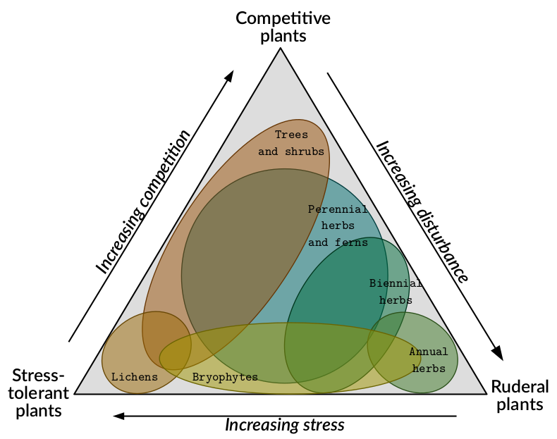
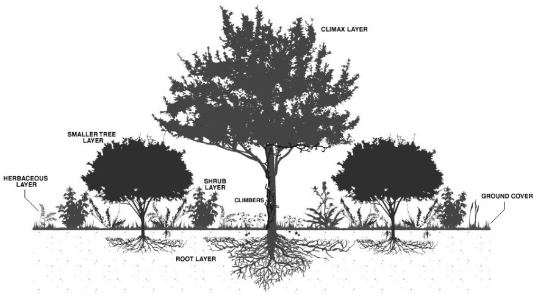
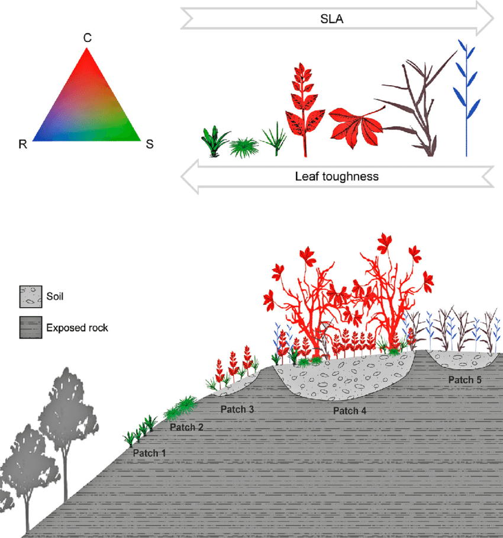

vignettes/fate_tutorial_1_PFG.Rmd
fate_tutorial_1_PFG.Rmd“The recurring suggestions are that models should explicitly (i) include spatiotemporal dynamics; (ii) consider multiple species in interactions and (iii) account for the processes shaping biodiversity distribution.”
FATE is a “a biodiversity model that meets this
challenge at regional scale by combining phenomenological and
process-based approaches and using well-defined plant functional
group. ” (Boulangeat,
2014)
A plant functional group, or PFG, is “a set of representative species [that] is classified based on key biological characteristics, to determine groups of species sharing ecological strategies.” (Boulangeat, 2012)


“Dominant species are usually seen as the main drivers of vegetation dynamics and ecosystem functioning (‘Biomass ratio hypothesis’ (Grime, 1998). Moreover, according to the well-known species-abundance distribution (Whittaker, 1965), just a few species produce most of the community’s biomass. In each vegetation strata (herbaceous, shrub, trees), these species are the most important, not only for structuring the landscape, but also explaining patterns of functional diversity.” (Boulangeat, 2012)
Building Plant Functional Group therefore consists of bringing together plants that have similar traits and strategies. Emphasis is placed on dominant plants that are supposed to structure the community, and groups are formed according to vegetation strata (and thus height). Soil conditions can also be taken into account (through trait measurement), as well as environmental or climatic conditions (through niche overlap).
Of course, anyone can build functional groups with any trait he wishes, as long as they reflect the strategies he wants to see emerge and study between groups. Here is a naive example : focusing on desert plants, traits to build the groups could include the height (to distinguish cactus and trees from wildflowers), soil preferences (sand, rocks, tundra), leaf dry matter content (water storage strategy), the flowering type, etc.
Here is an example of functional traits that can be used to build
Plant Functional Group (and parametrize a FATE simulation)
(Boulangeat,
2012, Boulangeat,
2014).
Since the basic idea of building Functional Group is to gather a lot of elements into a few, this implies two requirements :
In order to identify similarities between selected dominant species
in terms of habitat, the climatic or environmental niche of each species
is calculated and is compared with all the other dominant species
niches.
The overlap of species environmental niches is obtained in
second step.
Functional traits related to the fundamental process of growth are
retrieved for each dominant species and mixed together to calculate
functional distances between species.
Overlap of environmental niches and functional distances are
combined to form a matrix of species pairwise distances.
Finally, based on this distance matrix, species are clustered to find the best combination and obtain Functional Groups.
RFate
tutorial